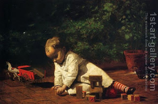

Bava Kamma 110 - One Who Robs a Convert Pays to the Priests

A convert to Judaism is considered in many aspects a newborn child, not part of his old family, nor yet of any new one.
If one robs a convert and swears falsely to him in denial of the robbery, and the convert then dies without leaving heirs, the robber pays the principal and the one-fifth surcharge to the Kohanim, and brings a guilt offering to the Altar .
If the robber was bringing up the money and the guilt offering to Jerusalem, and he died on route, the money shall be given to the robber's sons, because restitution to the Kohanim is only to atone for his guilt - while alive.